Welcome Year 11s at CSDE
Supporting Car Warp Assessment Task
Step 1: Download vehicle image
- The vehicle or background can be any colour.
- But the background should not be transparent.
- Otherwise, fill the background with a colour.
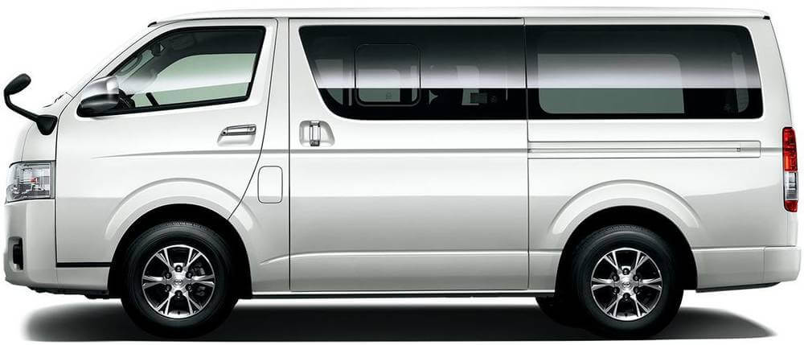
This van has white background
Step 2: Right click on image file
Open image with PhotoShop
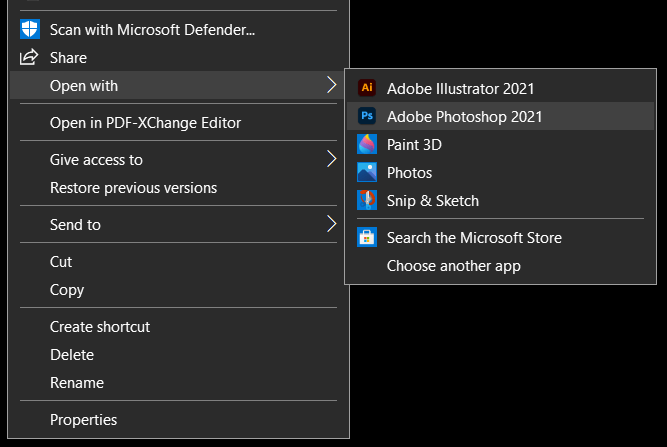
Click PhotoShop on Context Menu
Step 3: Duplicate image layer & Rename
PhotoShop opens the vehicle image as Background.
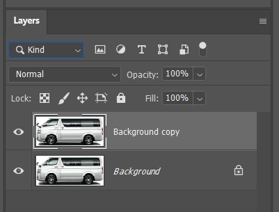
Duplicate Background layer and Rename it (e.g. Shadow)
Step 4: Trace around wrap area
- Using Pen tool(p), trace around the wrap area.
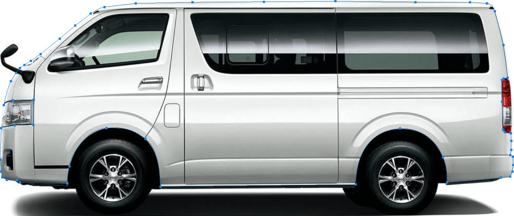
Step 5: Covert path into selection
- Blue path still being selected, press CTRL + ENTER.
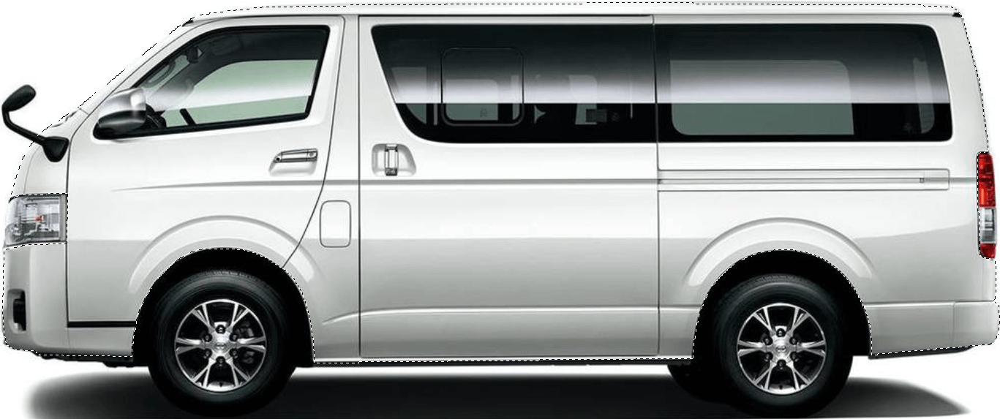
Convert Pen traced area into a selection
Step 6: Inverse selection
- Inverse (SHIFT + CTRL + i) the selection
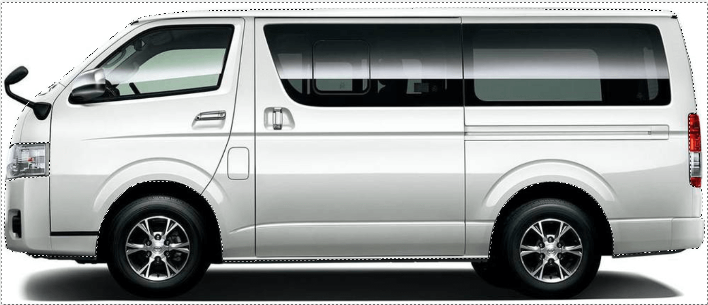
Step 7: Create new layer with selection
- Shadow layer (created in Step 3) being selected, press CTRL + J.
- Then, new layer is created with image from selected area
- while non-selected area turns transparent showing layer underneath.
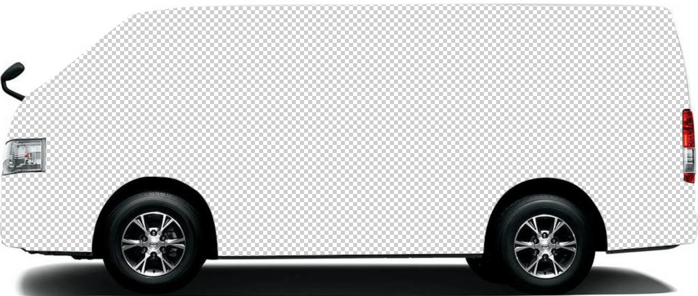
Rename new layer (e.g. Cut)
Step 8: Select parts to avoid wrapping
- Use Pen tool(p) and trace all the parts inside the wrap area.
- Blue paths still being selected, press CTRL + ENTER.
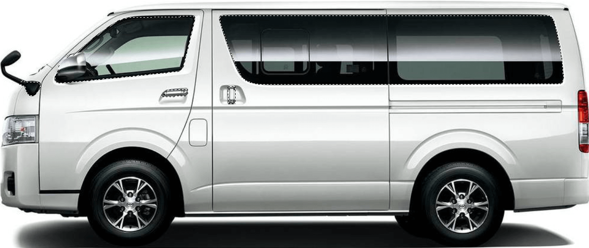
Convert Pen traced parts into selections
Step 9: Create layer with selected parts
- Shadow layer being selected again, press CTRL + J.
- As a result, new layer created from the selected parts.
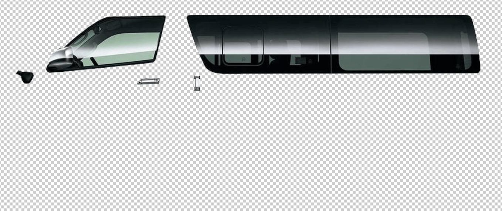
Rename new layer (e.g. Overlay)
Step 10: Blend Mode - Multiply
- Move the Shadow layer to the top.
- Change blend mode from Normal to Multiply
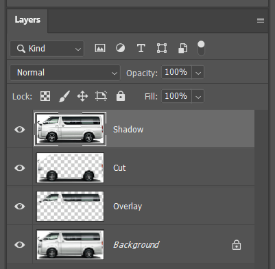
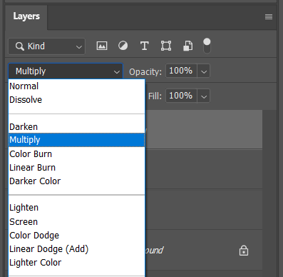
Step 11: Place pattern & logo
- Place pattern & logo between Background and Overlay layers.
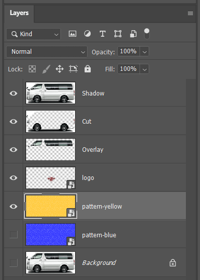
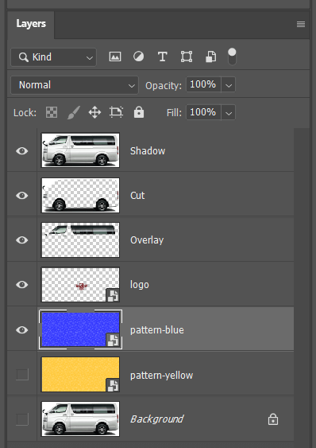
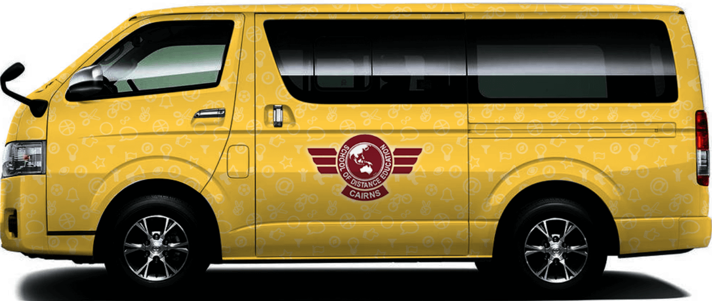
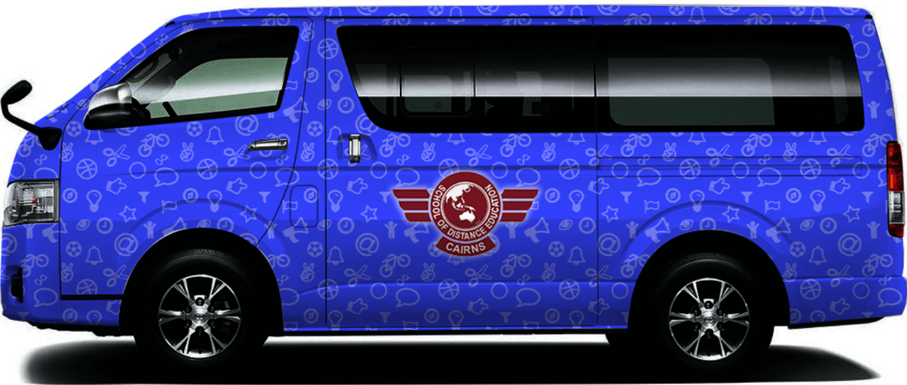
3D layer structure
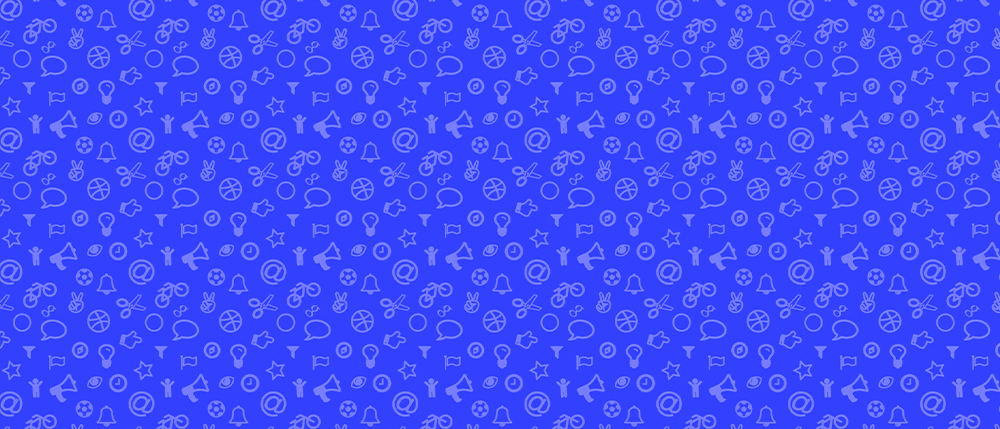
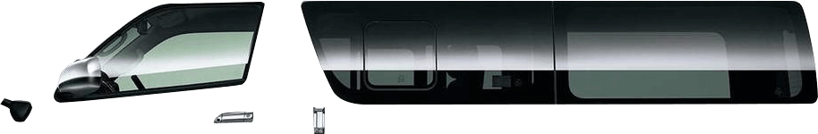
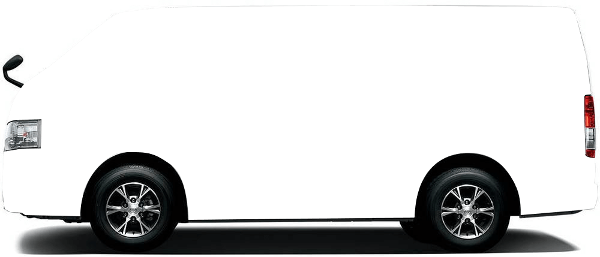